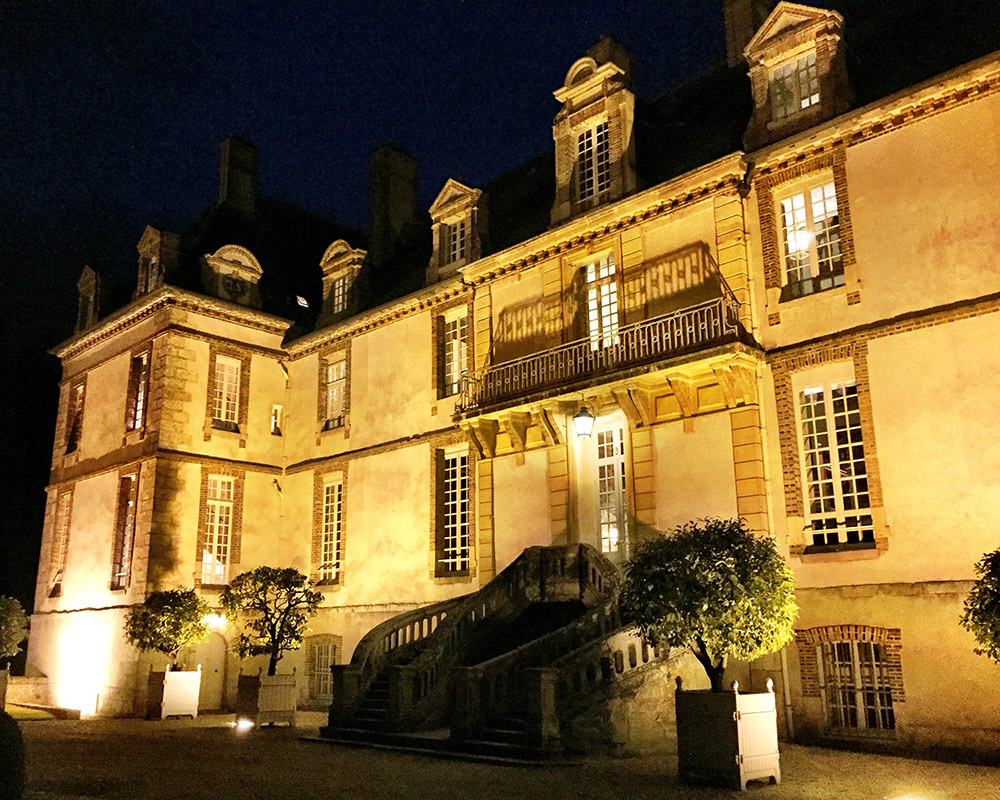
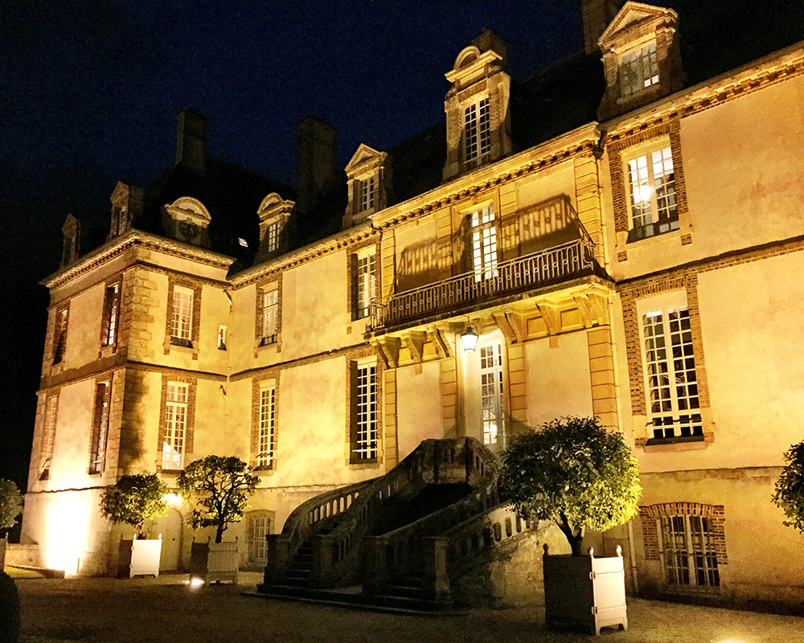
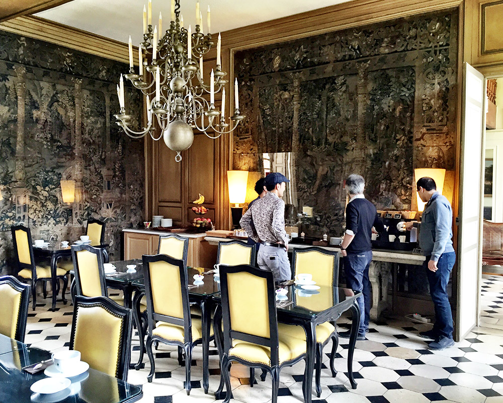
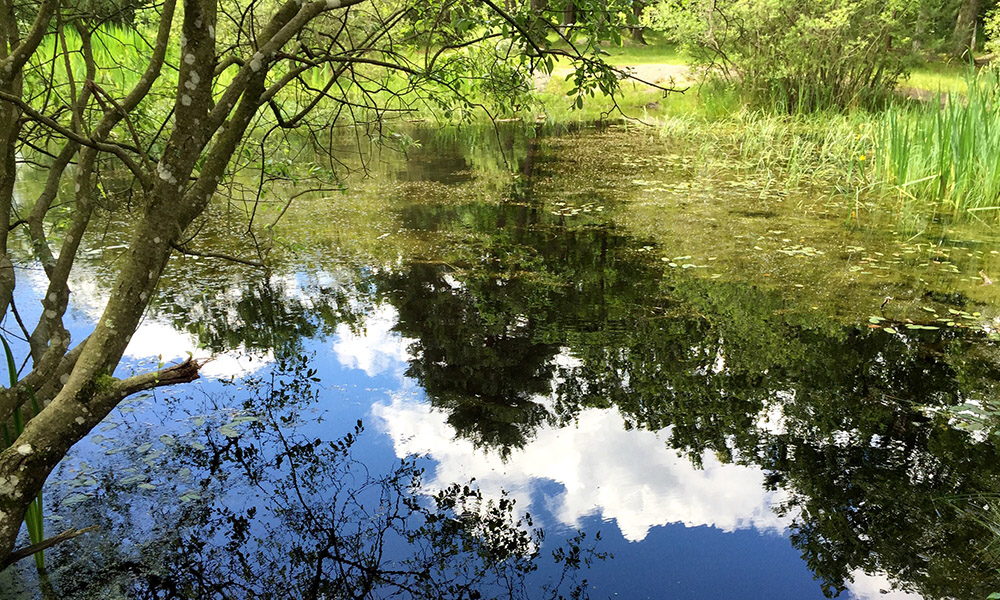
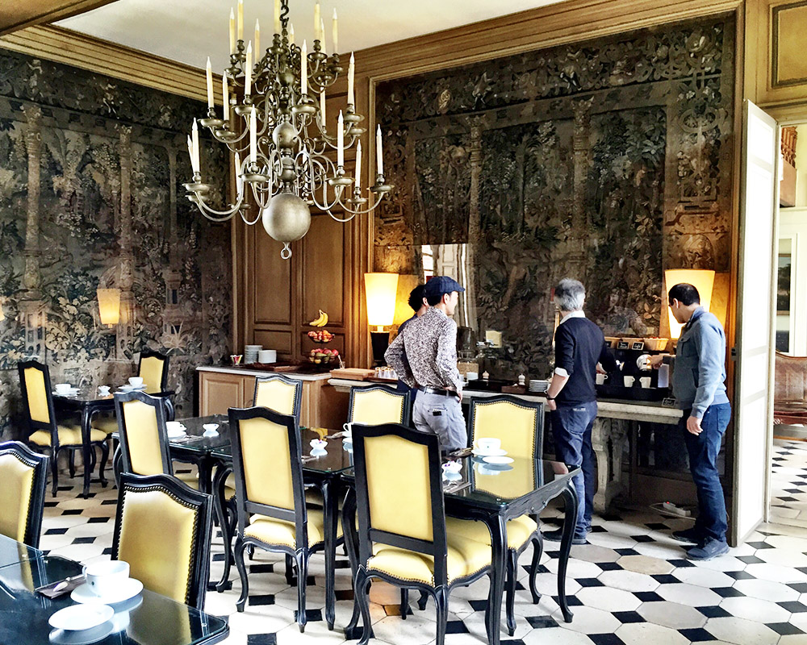
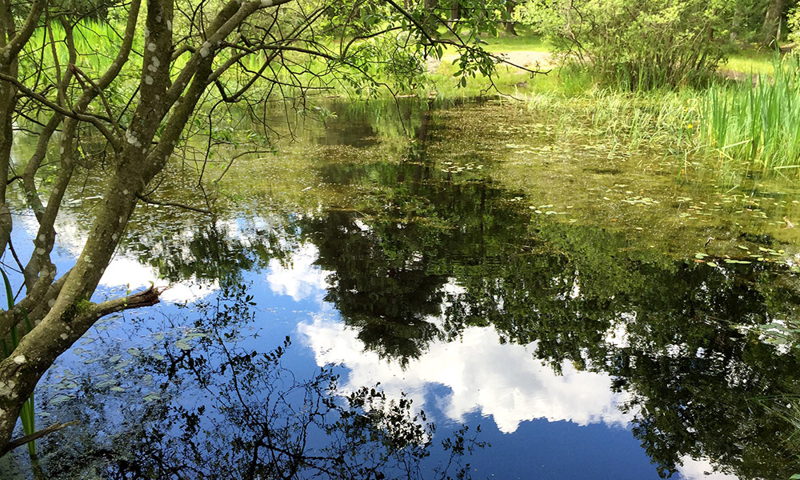

CNRS-NTT Joint Seminar in June 2016

The Seminar entitled "Theoretical and Experimental Approaches Towards Auditory Scene Analysis" was held at Château de Bourron-Marlotte Fontainebleau in France.
The closed meeting was organized by Daniel Pressniter (CNRS) and Hirohito Kondo (NTT) and supported by JSPS Bilateral Programs.
More than twenty researchers, including postdocs and PhD students, participated in this seminar to build an integrated theory of auditory scene analysis from findings of different disciplines.
Each participant gave a 30-min presentation on his/her research theme.
The presentations covered a wide range of topics including psychophysical, neuroimaging, neurophysiological, and mathematical modeling studies.
There were unpublished data in the lectures, which led to a lively question and answer session.
Avoiding the bustle of Paris, the participants spent all three days in a suburban facility, which allowed them to have an in-depth discussion took place even outside of the program time.
The other goal of social interactions has been also achieved.
We will continue to actively support young researchers and promote information exchange for collaborative research.
Photos

 

 


